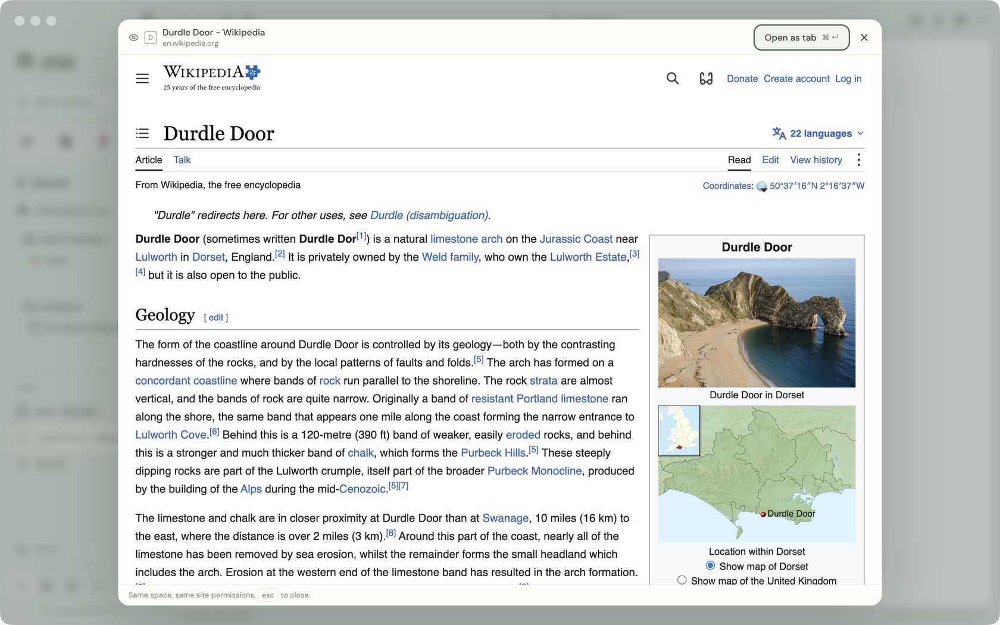
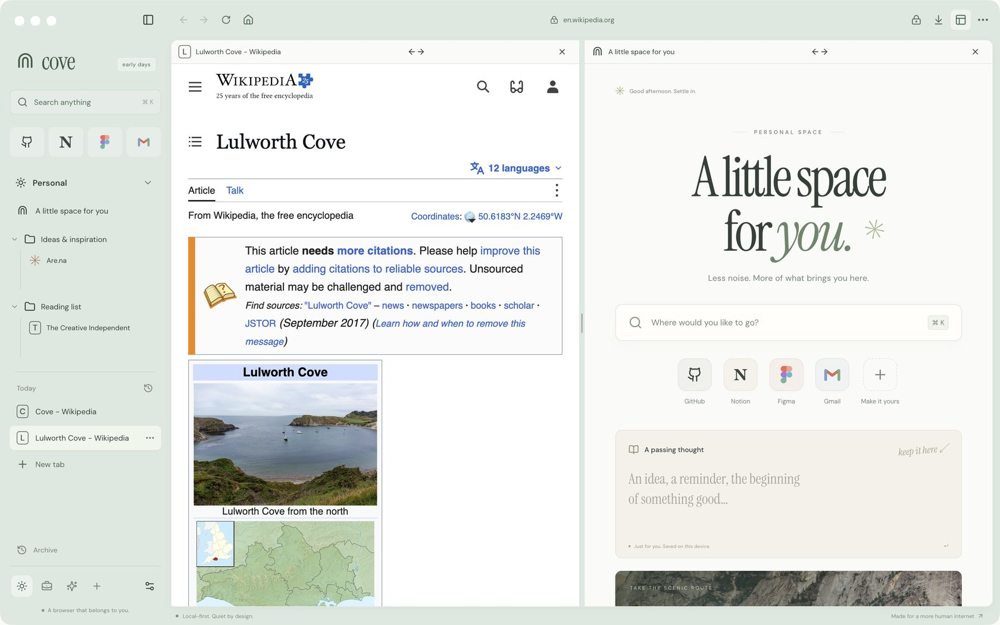
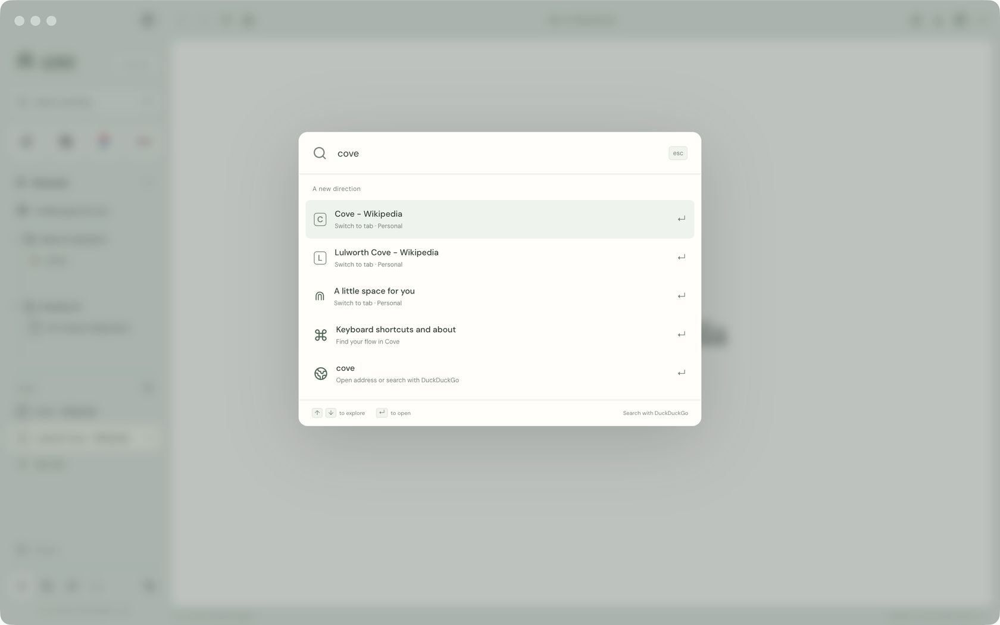
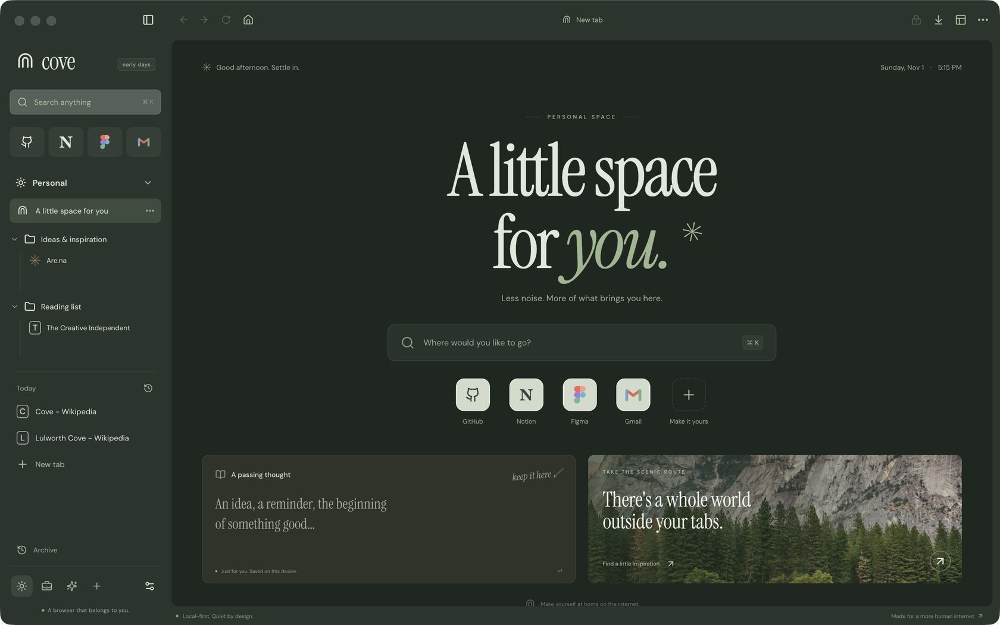

From your reading list
A slower kind of internet.
Keep the things that matter close. Let the rest breathe.
A free, open-source browser for people who miss Arc. Spaces, split view and Peek, in developer alpha 0.6.
Build the alpha



Look before you leap
Shift-click any link to read it in a preview over the page you’re on. Escape closes it, even from inside the page, and ⌘↵ keeps it as a tab in the same space, with the same site permissions.
Two pages, one window
Press ⌘⇧D to put two tabs side by side. Drag the divider anywhere between a quarter and three quarters, and each space remembers its own pair.
One box for everything
⌘K searches open tabs in every space, your favourites, your history and Cove’s own commands, ranked so the tab you meant comes first.
Light by day, dark by evening
Choose sage, sand or lavender. Cove can follow your computer’s light and dark setting as it changes, or you can turn evening mode on yourself.
Get anywhere from the keyboard, and back again.
A sidebar that keeps each part of your life in its own place.
Your workspace stays on your computer, and nobody is watching.
| Find | Search or open a new tab | ⌘ K |
| Find | Edit the address | ⌘ L |
| Find | Find on the page | ⌘ F |
| Find | Browsing history | ⌘ Y |
| Tabs | Close the tab | ⌘ W |
| Tabs | Bring back a closed tab | ⌘ ⇧ T |
| Tabs | Next tab | Ctrl Tab |
| Tabs | Previous tab | Ctrl ⇧ Tab |
| Window | Split view | ⌘ ⇧ D |
| Window | Hide the sidebar | ⌘ ⇧ S |
| Window | New private window | ⌘ ⇧ N |
| Window | Downloads | ⌘ J |
| Cove | Settings | ⌘ , |
Shown for macOS. Use Ctrl instead of ⌘ on Windows and Linux.
To begin, get the source. You’ll need Git, npm and Node.js 22.12 or newer, on macOS, Windows or Linux. Clone the repository, then install the exact versions it was tested with.
git clone https://github.com/arjunkshah12345-hash/cove-browser.git
cd cove-browser
npm ci
npm run desktopWhen it opens, make it yours. npm run desktop builds Cove and starts it. Make a space for work and another for everything else; each keeps its own logins. You can try that here first.
Less noise. More of what brings you here.
From your reading list
Keep the things that matter close. Let the rest breathe.
Interactive preview: an illustration built in HTML, not a live browser.
Before you rely on it, know what’s missing. This is early software, not a browser for every day yet. Builds are unsigned and not notarized, there are no automatic updates, and you shouldn’t use it for sensitive browsing. Extensions, a password manager, sync and an ad blocker aren’t here yet.
If something feels wrong, say so. Open an issue on GitHub. Pull requests are welcome, and the contributing guide explains how to run the tests.
No. Cove is an independent implementation inspired by the way Arc made browsing feel. It doesn’t use Arc’s code or branding, and it isn’t affiliated with The Browser Company.
No. Cove is free and MIT-licensed, so you can read, change and share the code. It’s built with Electron, Chromium and React.
Building from source needs a desktop on macOS, Windows or Linux with Node.js 22.12 or newer. So far, packaged builds have only been checked on Apple Silicon Macs.
Not directly. Cove uses its own Chromium sessions and never reads another browser’s profile. You can import a bookmarks file, up to 500 links at a time.
No. There’s no telemetry and no account. Your workspace, history and notes stay on your computer, and in normal spaces you stay signed in to websites across restarts.
Private sessions are separate and aren’t saved. That isn’t anonymity, and it doesn’t guarantee nothing touches the disk: saved downloads remain, and temporary runtime data isn’t automatically erased.
Not yet. The alpha has no extensions, password manager, sync or ad blocker. The roadmap lists what comes before a public release.